Fallout: Music City
A Fallout mod set in a post-apocalyptic Nashville, featuring hand-crafted dungeons, environmental storytelling and immersive interior spaces.
Project Overview
Note: Fallout: Music City is no longer in development. It was the first project I ever worked on and where I served as project lead, and I am always concepting ways to bring it back.
Fallout: Music City reimagined Nashville as a wasteland frontier, blending Southern culture with Fallout's signature post-apocalyptic tone. I joined as a junior level designer. It was my first time on a team and my first time doing level design.
This project taught me how to make levels that are actually visually interesting and fun to play. A lot of what I learned went beyond the basics of the Creation Kit. I had to figure out how to build spaces with more than just four walls. I spent a lot of time learning how to use rubble, pipes, skeletons and enemies to distinguish each level and make them feel like they could've been in the original game.
Development Approach
Location Design
Each dungeon I designed was a big step for me, and a challenge I faced was making each feel individual and not tell the same story. The hospital had to be different from the hatch bunker, and the Death Depths had to be different from the hole.
The hospital had to feel like a moment frozen in time, with patients in their beds and doctors performing surgeries. The hatch bunker had to feel like a worst-case scenario for a survivalist who people thought was crazy. The Death Depths had to feel like a deep, dark and dangerous place you don't want to go.
Environmental Storytelling
Rather than relying on exposition, locations were built to communicate history through debris placement, lighting and spatial composition, encouraging players to piece together what happened as they explore.
Key Locations
- • Abandoned Hospital: A long-abandoned hospital housing a large infestation of cave crickets and patients from before the bombs fell.
- • Hatch Bunker: A homemade bunker built from a trailer by a prewar survivalist.
- • The Death Depths: A Deathclaw den home to a tribe that has been hunting nearby wastelanders and dragging them deep into their lair.
- • The Hole: The very first level of the whole mod, an abandoned vault that was under construction when the bombs fell, now taken over by slavers.
Project Gallery
Abandoned Hospital
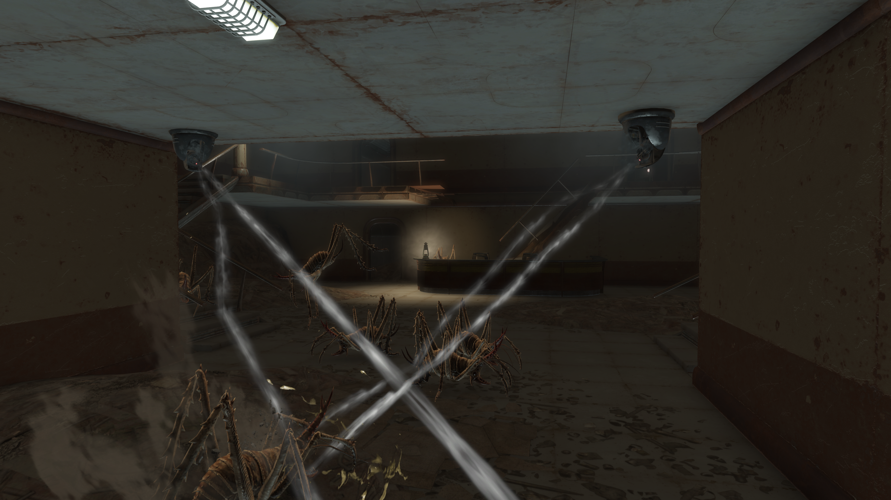
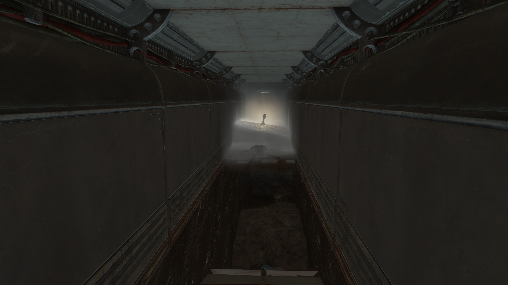
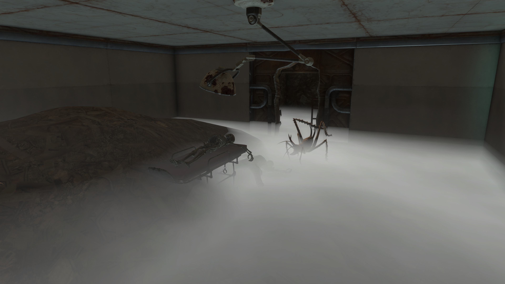
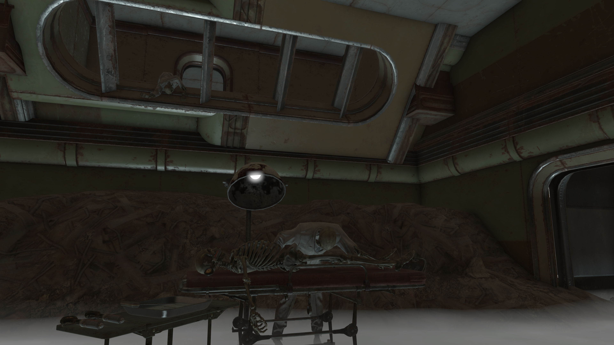
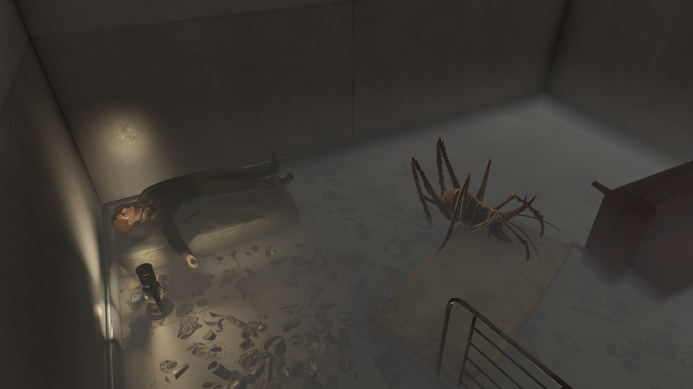
Hatch Bunker
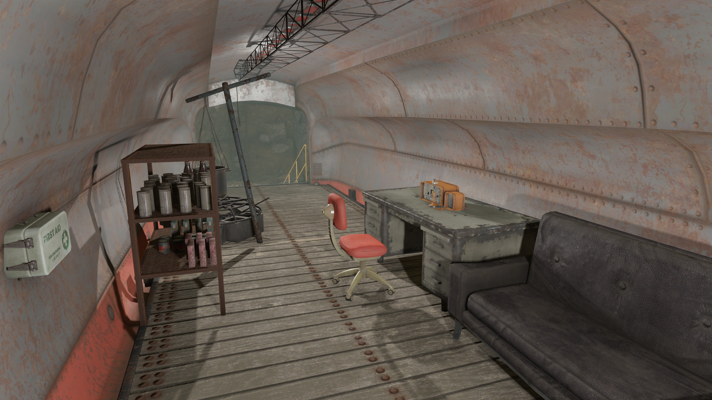
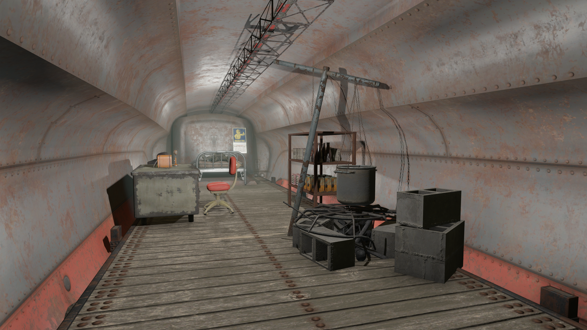
The Death Depths
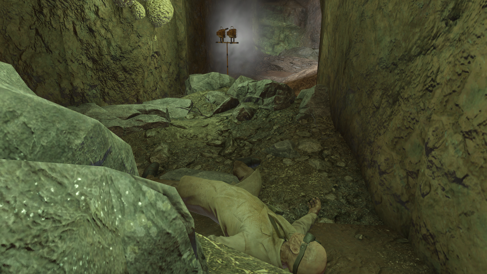
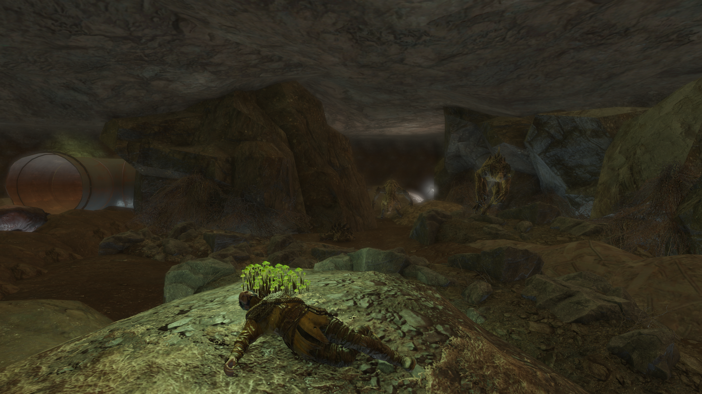
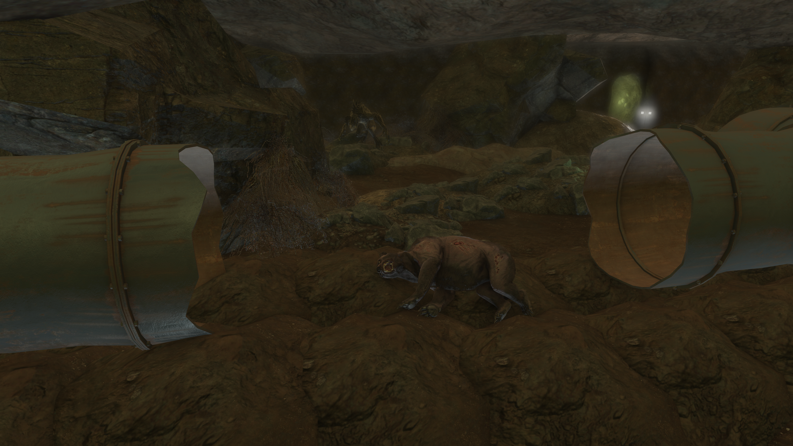
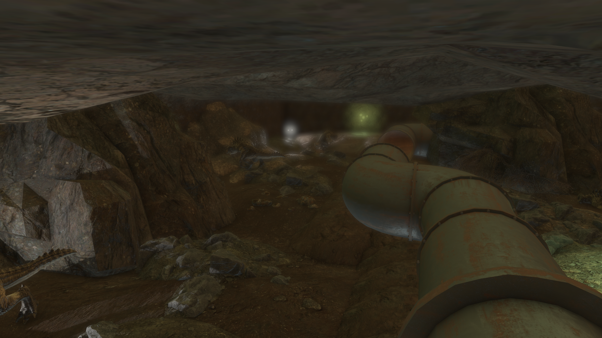
The Hole
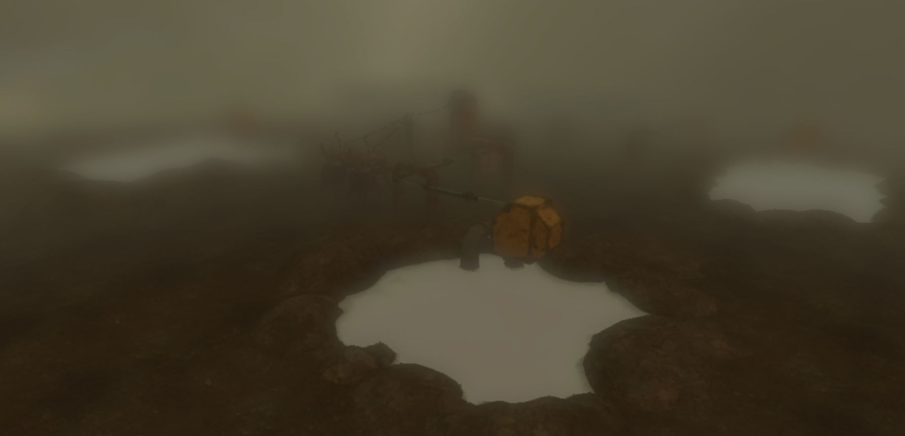
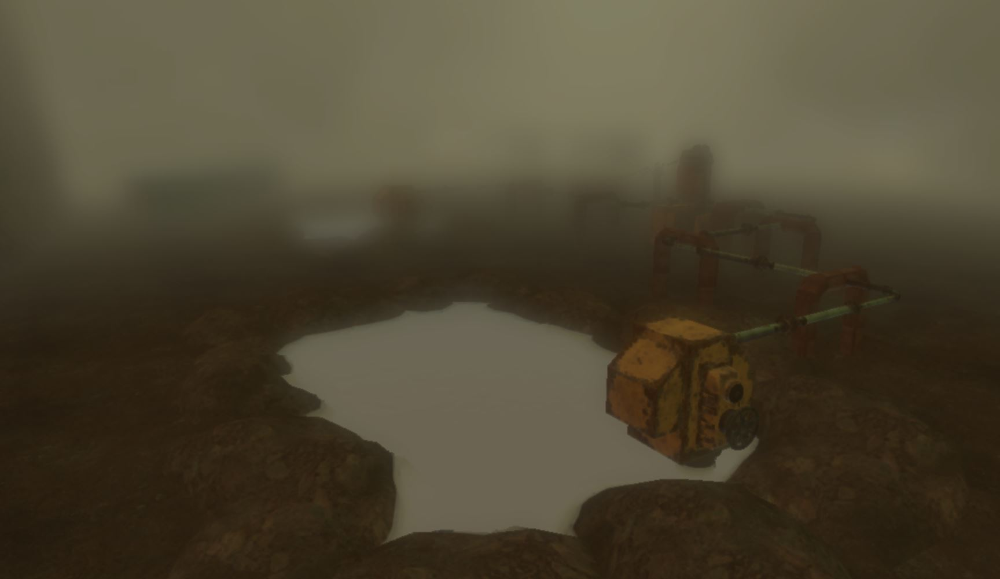
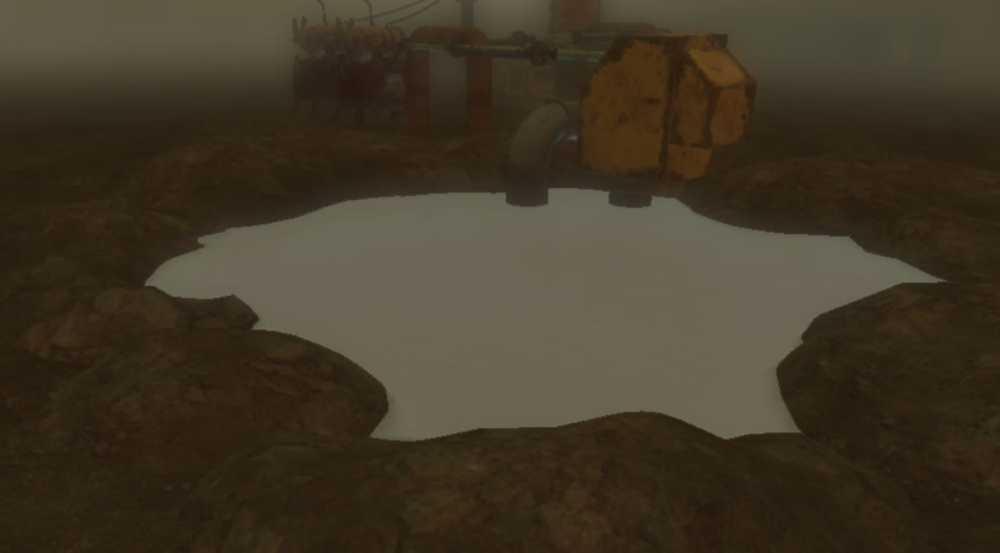